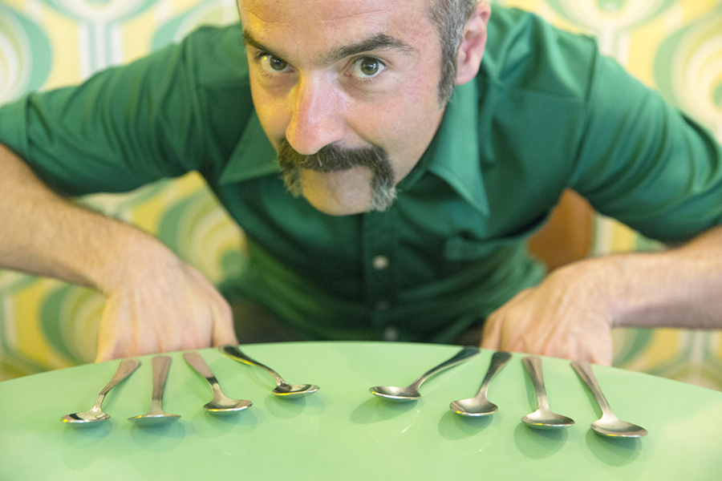

Manifiesto
Personajes, historias y escenarios como materia prima. Una trayectoria construida entre la
interpretación, la dirección y la creación, frente a la cámara y detrás de ella. El cine
como
espacio para explorar otras vidas, otras voces y otras formas de mirar. Del teatro a la
televisión y de la pantalla al escenario, cada proyecto es una nueva forma de contar,
transformar
y dejar una huella.
Trayectoria
Formado en Arte Dramático en la RESAD de Madrid, ha ampliado su
recorrido con talleres de teatro contemporáneo,
interpretación ante la cámara y creación escénica,
de la mano de profesionales como Carla Manteini, Félix Sabroso,
Dunia Ayuso, Andrés Lima, Miguel del Arco y Alfredo Sanzol.
Su formación se extiende también a la lengua de signos española,
incorporando nuevas formas de comunicación y
expresión a su universo artístico.
